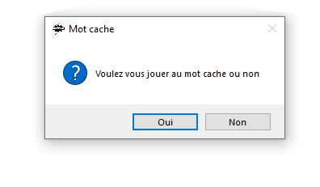
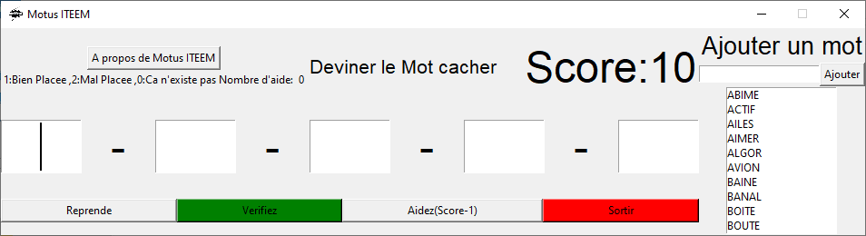
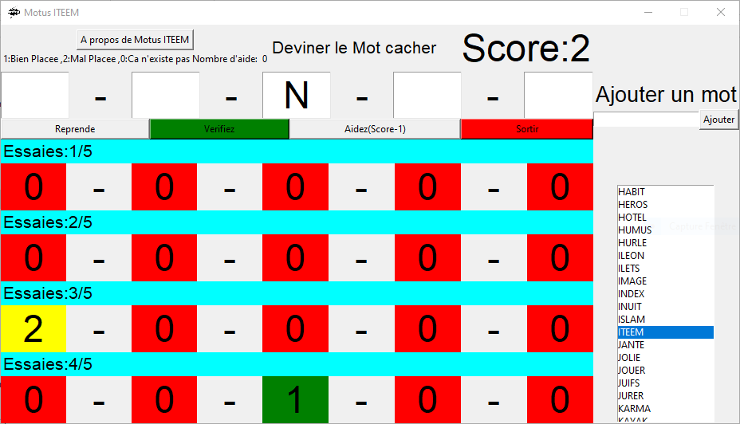
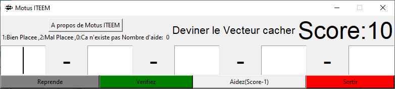
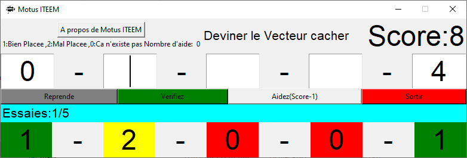
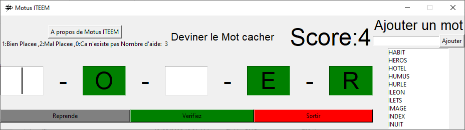
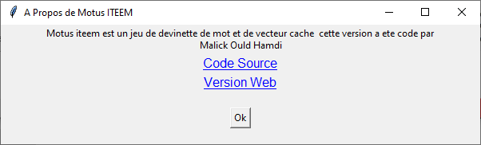

Motus_ITEEM
|
|---|
| Context de l'idee: Code Source Version Web |
| Soit C,P,R 3 vecteurs de 5 entier,le vecteur C est rempli aleatoirement par la fonction Rand(x) qui rend un entier entre 0 et x ,l'utilisateur saisi successivement ses propositions pour decouvrir le contenu du vecteur C. Le vecteur R contient le resultat de la proposition qui contient pour chaque case 0,1 et 2. 0:si le chiffre correspondant ne figure pas dans le vecteur C. 1:si le chiffre correspondant figure et bien placee. 2:si le chiffre correspondant existe mais mal placee. |
Demande a l'utilisateur s'il veut jouer au mot cache sinon vecteur cache

Si oui jouer au mot cache

L'option de jouer au mot permet a l'utilisateur d'explorer une longue liste de mots de
5 lettres auquel il peut en ajouter ses propres mots obeissant au creiters suivant :
5 letrres de longueur et caractere alphabetique seulement.
L'utilisateur ne peut pas effacer les mots inclus par defaut dans le program mais il peut
supprimer les siens en supprimant le fichier “Les_mots.mot” qui contient tout
ses nouveaux mots.Ils se peut que l'utilisateur essaye de manipuler le fichier “Les_mots.mot”
pour essayer d'introduire des mots qui n'obeisseent pas au regles precedents mais Motus_ITEEM ne prendra en charge
que les mots legal
En jouant au mot cacher les lettres sont automatiquement mis au majuscule si on entre un chiffre dans une case il sera automatiquement supprimer

Si non jouer au vecteur cache

Ici l'utilisateur cherche a deviner les 5 chiffres cache dans le vecteur C

Les Fonctionnalites
- Le Boutton Reprendre
- permet a l'utilisateur de reprendre le jeu elle reinitialise le score et le nombre d'essaie
- Verifiez
- permet a l'utilisateur de verifiez sa proposition elle affiche erreur si on rempli pas toutes les 5 cases elle
disparait quand on gagne ou on perd apres 5 essaies elle reapparait au prochain jeu - Aidez(Score-nombre de fois aider+1)
- elle affiche une valeur de ce que l'on cache la valeur est choisi au hasard et retranche du score le nombre de
fois il a utiliser s'il n'as pas suffisament de score ou a utiliser l'aide 3 fois elle ne fonctionne plus elle disparait
et reapparait quand on reprend
 - Sortir
- Quitte le programme
- A propos
- Montre quelque infos sur Motus_ITEEM
